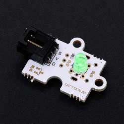
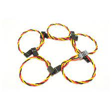
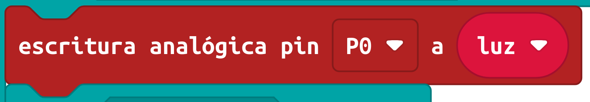
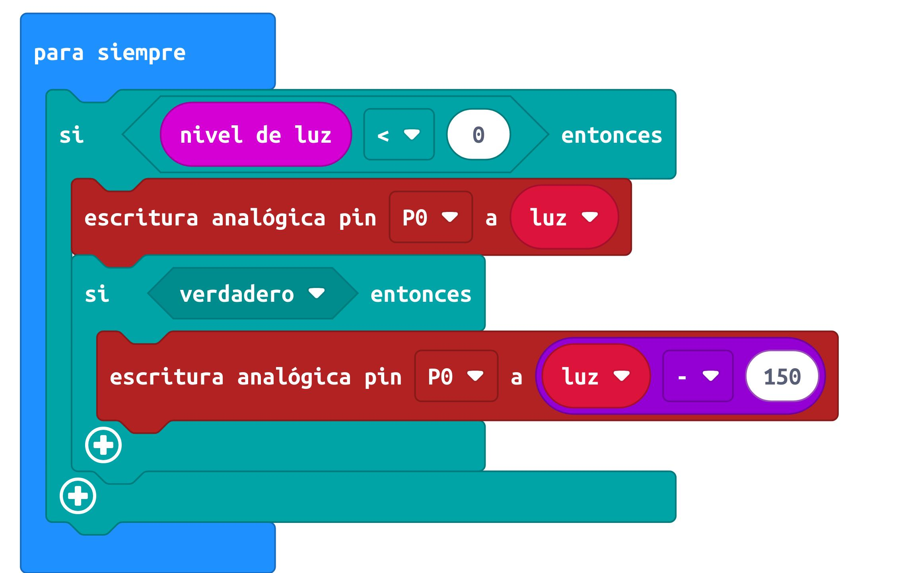

Has usado diferentes actuadores llamados LED, pero controlar el nivel de luz nos puede servir para otras cosas no solo para saber si es de noche y tienes que encender una luz.
¿Sabías que en la antigüedad creían que los eclipses eran símbolo de mal augurio o que era un castigo de los dioses?
¿Sabes lo que es una smart city? ¿Y la domótica? ¿y la inmótica?
¿Cuál es entonces la diferencia entre ellas? Exactamente, todas se refieren al uso de la robótica varía la extensión: ciudad, edificio o vivienda.
Los temporizadores hacen que se encienda la luz, en tu caso el LED, cuando el nivel de luz desciende hasta una cantidad. Muchas casas tienen este sistema de iluminación al igual que las ciudades, no lo confundas con el encendido y apagado a una hora del día, eso no es sistema domótico.
Tienes que programar la placa para que cuando el nivel de luz baje de 150 se encienda tu luz LED.
En el último año estamos observando cómo la luz es cada vez más cara. Existen muchos dispositivos para controlar estos gastos. El más usado es tu madre o tu padre detrás de tí diciéndote que apagues luces, que la luz no la regalan, pero existen otros más "robóticos".
Podrías construir un sistema domótico que controlara el nivel de luz pero además el gasto. Podríamos hacer que cuando lleva un número de horas encendido bajara la intensidad lumínica gastando menos. Podría emitir un pitido si hemos llegado al tope de gasto del mes o podríamos hacer que cuando se alcance una cantidad la luz no llegara ni a encenderse.
Cuando lleva un número de horas encendido bajara la intensidad lumínica gastando menos.
¿Qué elemento usas?


Instrucción

Puede tomar valores desde 0 hasta 1024 variando la intensidad de la luz.
Una pista del código

Podría emitir un pitido si hemos llegado al tope de gasto del mes o
podríamos hacer que cuando se alcance una cantidad la luz no llegara ni a encenderse.
Los supuestos van en orden de dificultad. Empieza por el primero y ve en aumento. ¿Porías contemplar todas las posibilidades?
Supongo que has cruzado en Estepona por un paso de peatones. ¿Te has dado cuenta como son los pulsadores del cambio de semáforo? Efectivamente, no se tocan. Este es otro efecto de la pandemia, tocar lo menos posible... ¿Serías capaz de programar este sensor con la microbit y un LED?
Una vez "tocado" debe esperar cuatro segundos que serán indicados en la matriz LED enciendo cuatro puntos (sucesivamente) después se encenderá el LED externo y emite un pitido para las personas con deficiencias visuales.
 Has usado diferentes actuadores llamados LED, pero controlar el nivel de luz nos puede servir para otras cosas no solo para saber si es de noche y tienes que encender una luz.
Has usado diferentes actuadores llamados LED, pero controlar el nivel de luz nos puede servir para otras cosas no solo para saber si es de noche y tienes que encender una luz.